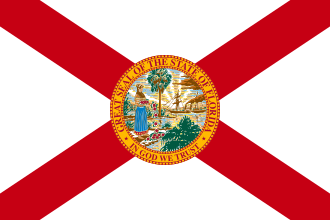
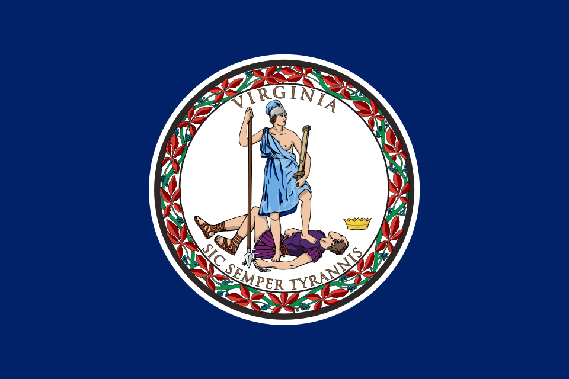
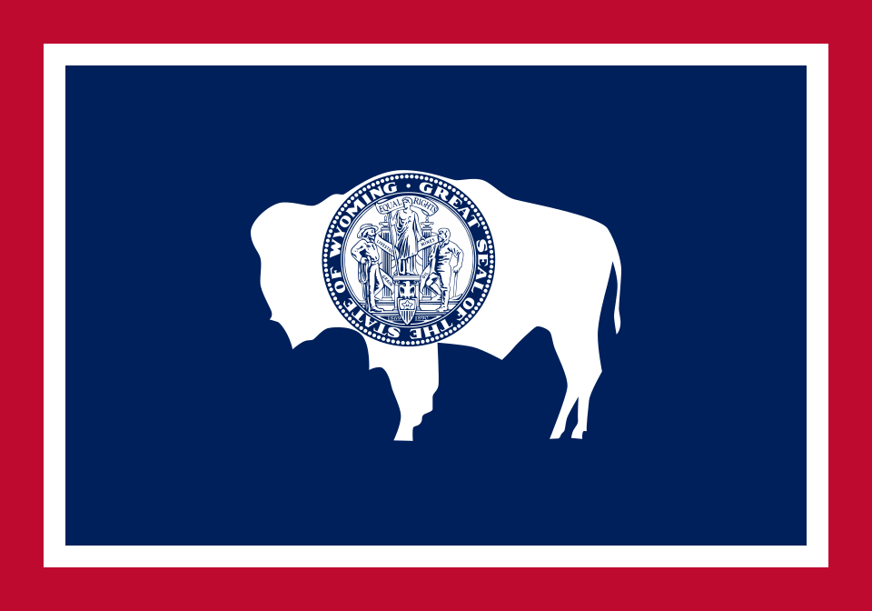

Nationwide Bookkeeping
Remote bookkeeping throughout the United States. In person meetings in Los Angeles County are by appointment only.
- AlabamaView State Information
- AlaskaView State Information
- ArizonaView State Information
- ArkansasView State Information
- CaliforniaView State Information
- ColoradoView State Information
 ConnecticutView State Information
ConnecticutView State Information- DelawareView State Information

FloridaView State Information- GeorgiaView State Information
- HawaiiView State Information
- IdahoView State Information
- IllinoisView State Information
- IndianaView State Information
- IowaView State Information
- KansasView State Information
- KentuckyView State Information
- LouisianaView State Information
- MaineView State Information
- MarylandView State Information
- MassachusettsView State Information
- MichiganView State Information
- MinnesotaView State Information
- MississippiView State Information
- MissouriView State Information
- MontanaView State Information
- NebraskaView State Information
- NevadaView State Information
- New HampshireView State Information
- New JerseyView State Information
- New MexicoView State Information
- New YorkView State Information
- North CarolinaView State Information
- North DakotaView State Information
- OhioView State Information
- OklahomaView State Information
- OregonView State Information
- PennsylvaniaView State Information
- Rhode IslandView State Information
- South CarolinaView State Information
- South DakotaView State Information
- TennesseeView State Information
- TexasView State Information
- UtahView State Information
- VermontView State Information

VirginiaView State Information- WashingtonView State Information
- West VirginiaView State Information
- WisconsinView State Information

WyomingView State Information
Bookkeeping Services

Los Angeles County
Explore local service information for Burbank, Glendale, Santa Monica and the other communities in our LA County directory.
Explore LA County